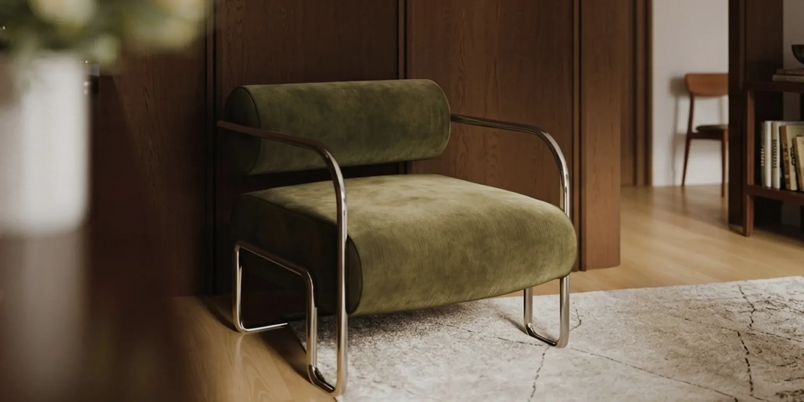
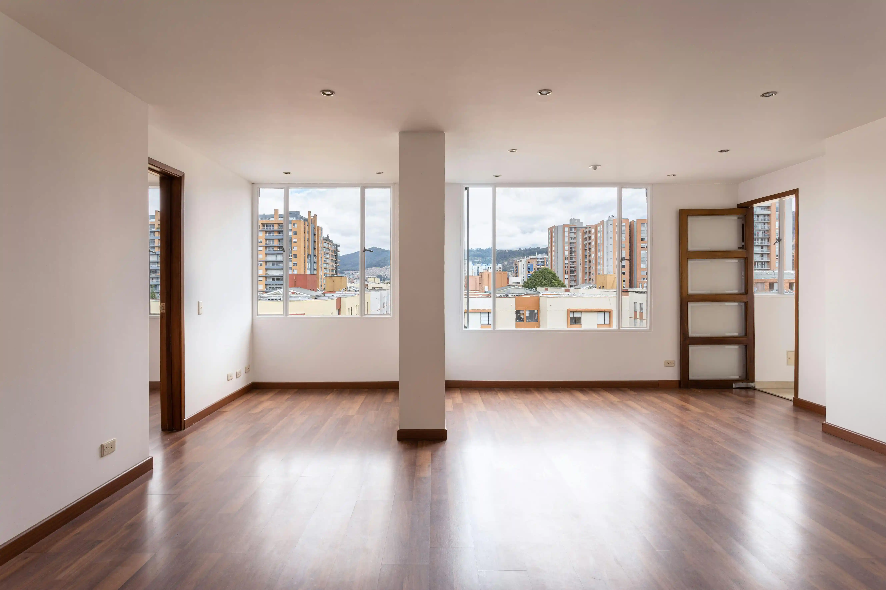
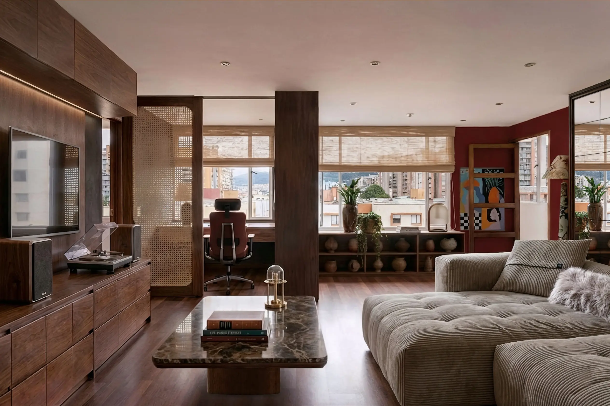
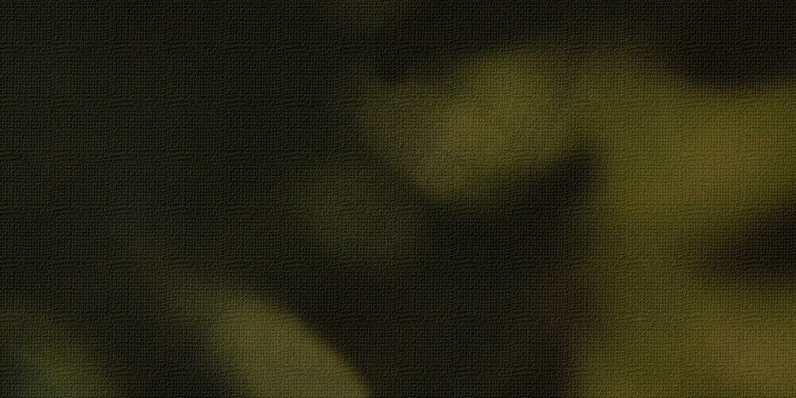
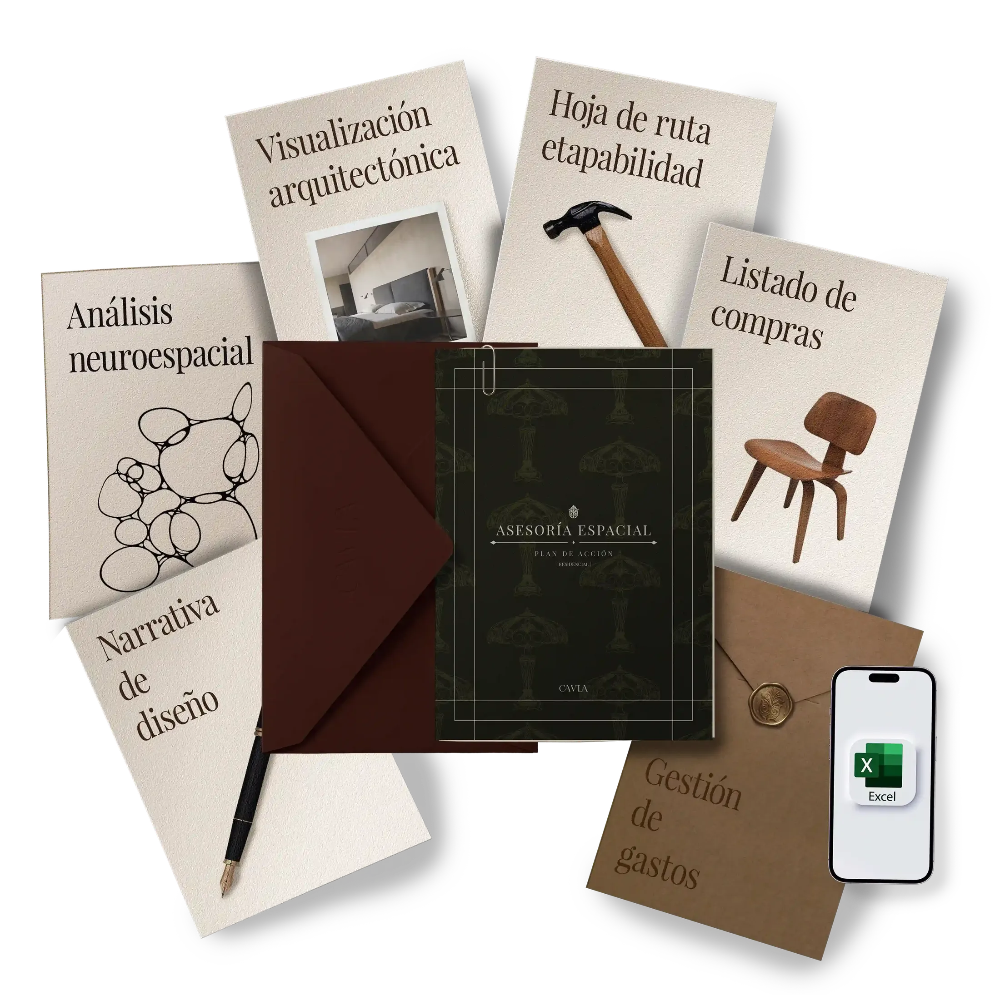
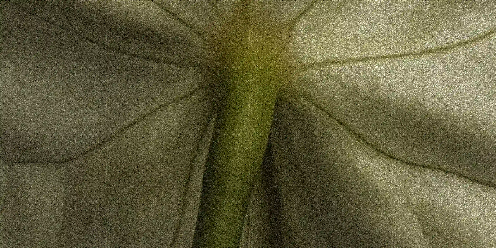
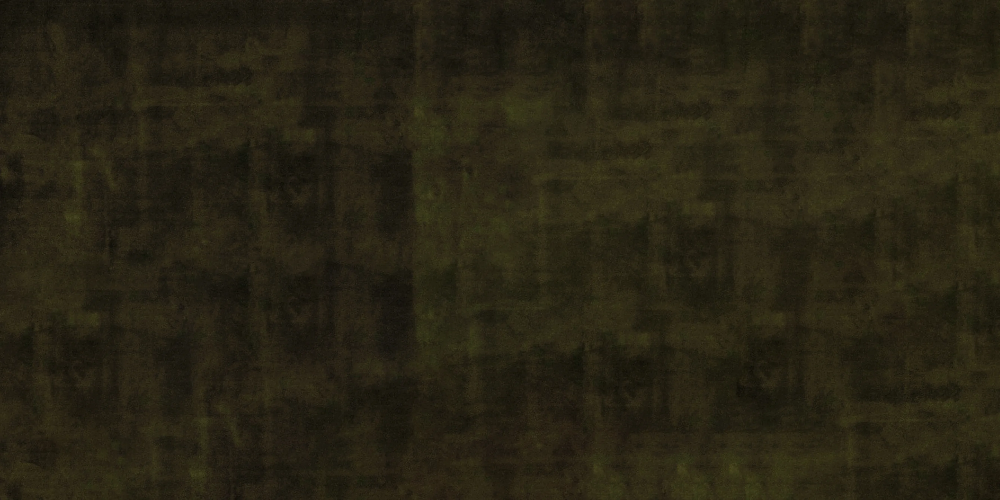
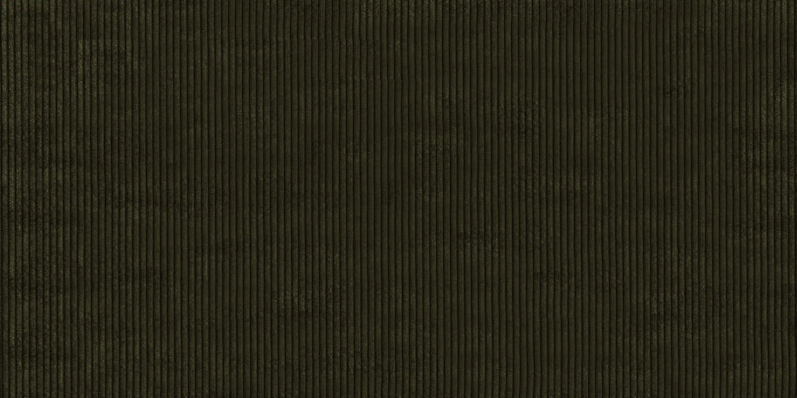

Asesoría Espacial
UN ENCUENTRO VIRTUAL Y UN PLAN DE ACCIÓN


Un encuentro virtual y un plan de acción para transformar tu espacio con lo que ya tenés.
Empezar mi proyecto

De un montón de ideas sueltas, al lugar que querés volver.



Este servicio no incluye:
No es técnica ni apta para ejecutar obra civil. Los valores del presupuesto son estimados de referencia, el costo final depende de tus elecciones al comprar.

¿Necesitás documentación ejecutable para obra?
Ver Diseño Integral¿Necesitás diseñar un mueble en específico?
Ver Diseño Mobiliario
Fotos de tu espacio
1 hora de asesoría
Preparamos tu plan de acción
Te enviamos el plan en PDF
La asesoría se presupuesta a medida. Con el pago de una seña damos inicio y con el pago restante te entregamos el plan de acción.
Empezar mi proyectoEs para vos si buscás un diseño profesional y ejecutarlo a tu propio ritmo. Ideal para renovar la estética y funcionalidad de un ambiente sin entrar en la complejidad de una obra o de un mobiliario a medida.
Solo tenés que completar el formulario de relevamiento para enviarnos las fotos de tu espacio.
Si luego necesitás documentación técnica o mobiliario a medida, podés evolucionar al servicio de Diseño Integral. En ese caso, tomamos parte del valor de esta asesoría como crédito a tu favor.
Analizamos un ambiente por sesión para poder profundizar en la complejidad funcional y estética de cada diseño. Si querés intervenir más de uno, coordinamos una sesión para cada espacio.
El plazo se especifica en la cotización según la complejidad del proyecto, aunque el tiempo estimado de entrega es de una semana.